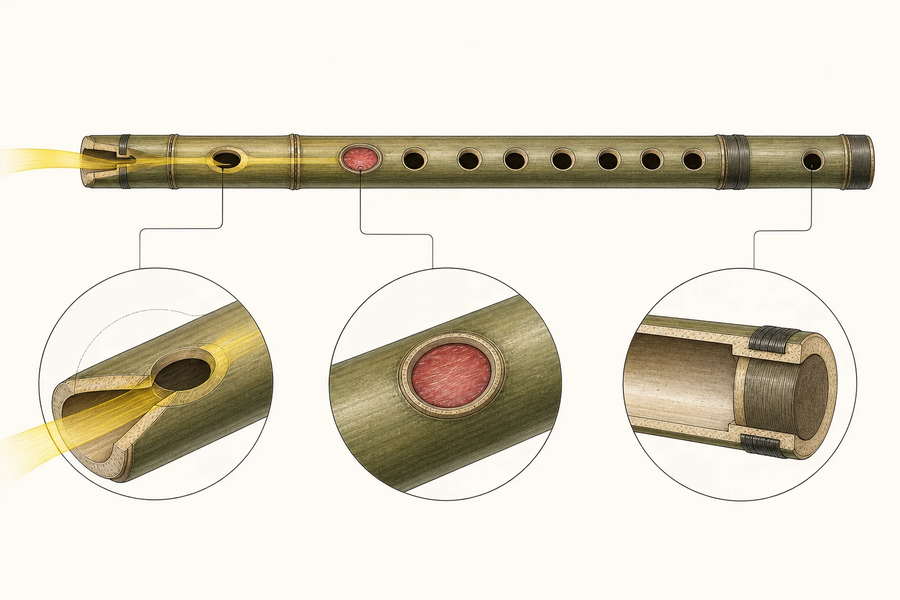

笛子百科
讀懂一支笛，聽見更多。
從形制與音色入門，逐步讀到演奏、製作、人物和作品。這裏收錄 60 篇已成文專題；未成文的索引另存研究文庫。
初識竹笛
8 篇
演奏與練習
14 篇
樂器、製作與聲學
8 篇
歷史與地域
4 篇
人物與傳承
11 篇
作品研讀
11 篇
研究方法
4 篇
樂器與技法資料索引
查看本批 12 個規劃頁面
- 竹笛是甚麼：形制、聲音與用途 L2
- 笛、橫笛、竹笛與相關名稱辨析 L2
- 竹笛結構完整圖解 L2
- 笛膜：材料、貼法、聲學與故障 L2
- 曲笛、梆笛、新笛與大笛比較 L2
- 從考古吹管樂器到現代竹笛：證據與限制 L2
- 20 世紀竹笛獨奏化與專業教育 L2
- 北派、南派及當代風格分類 L2
- 調性、筒音與實際音高 L2
- 音域、移調與簡譜／五線譜 L2
- 選購、日常保養與季節管理 L2
- 如何閱讀本知識庫的證據及核實狀態 L2
查看本批 12 個規劃頁面
- 發音、口風與氣流方向 L2
- 長音 L2
- 單吐 L3
- 雙吐 L2
- 三吐 L2
- 花舌 L2
- 打音、疊音與贈音 L2
- 顫音 L2
- 滑音與抹音 L2
- 半孔與叉指 L2
- 氣震音 L2
- 循環換氣 L3
查看本批 10 個規劃頁面
- 竹笛總論 L2
- 曲笛 L2
- 梆笛 L2
- 新笛 L2
- 大笛 L2
- 八孔笛 L2
- 十孔笛 L2
- 十一孔笛 L2
- 加鍵笛 L2
- 竹笛與簫、篪、長笛比較 L2
主題插圖（非教學圖）
